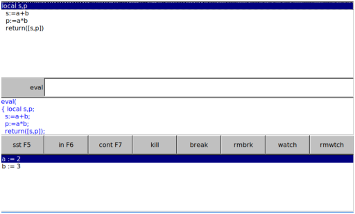

12.5.1 Starting the debugger: debug sst in sst_in cont kill break breakpoint halt rmbrk rmbreakpoint watch rmwtch
The debug command starts the Xcas debugger.
-
debug takes one argument:
fn(arg), a function and its argument.
- debug(fn(arg))
brings up a debug window which contains a pane with the program with
the current line highlighted, an eval entry box,
a pane with the program including the breakpoints, a row of buttons,
and a pane keeping track of the values of variables.
By default, the
value of all variables in the program are in this pane. The buttons
are shortcuts for entering commands in the eval box, but you
can enter other commands in the eval box to change the values
of variables or to run a command in the context of the program.
Example
With the sumprod program:
| sumprod(a,b):= { |
| local s, p; |
| s:= a + b; |
| p:= a*b; |
| return [s,p]; |
| }
|
Input:
debug(sumprod(2,3))
Output:

The debug window has the following buttons:
-
sst
- This button will run the
sst command, which takes no arguments and runs the
highlighted line in the program before moving to the next line.
- in
-
This button will run the
sst_in command, which takes no argument and runs one step in
the program or a user defined function used in the program.
- cont
- This button will run the
cont command, which takes no arguments and runs the commands
from the highlighted line to a breakpoint.
- kill
- This button will run the
kill command, which exits the debugger.
- break
- This button will put the command
breakpoint in the eval box, with default arguments
of the current program and the current line. It sets a breakpoint at
the given line of the given program. Alternatively, if you click on a
line in the program in the top pane, you will get the
breakpoint command with that program and the line you clicked
on.
You can set a breakpoint when you write a program with the
halt() command. When a program has a halt command,
then running the program will bring up the debugger. If you want to
debug the program, though, it is still better to use the debug
command. Also, you should remove any halt commands when you
are done debugging.
- rmbrk
- This button will put the command
rmbreakpoint in the eval box , with default
arguments of the current program and the current line. It removes a
breakpoint at the given line of the given program. Alternatively, you
can click on the line in the program in the top pane with the bookmark
you want to remove.
- watch
- This button will put the command
watch in the eval box, without the arguments filled
in. It takes a list of variables as arguments, and will keep track of
the values of these variables in the variable pane.
- rmwtch
- This button will put the
command rmwatch in the eval box
without the arguments filled in. The arguments are the variables you
want to remove from the watch list.